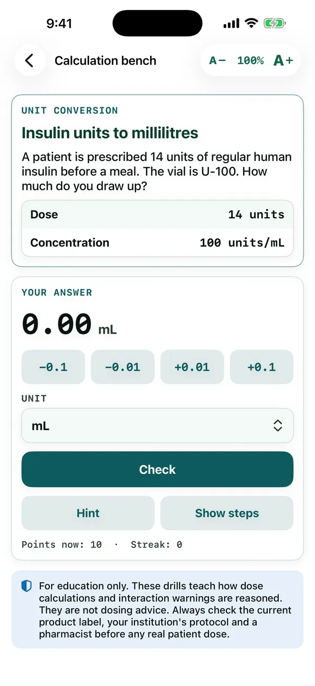

MedForge / Apps / Dose and Interaction Drill
Foundations · Dose drill
Dose and Interaction Drill
Calculate it. Then ask what it interacts with.
Fourteen label-style dose calculations and twelve drug-interaction rounds. Work the label card with a stepper and a unit picker, then name the mechanism and choose the action.
Free preview: four items. Unlock all 26. $3.99/month or $29.99/year
Live demo of Dose and Interaction Drill
Try it: work the label, then check the interaction
Two items from the app. Same stepper, unit picker and two-step flow as the app.
In the app
A real screen from Dose and Interaction Drill
From the iPhone app, in a pre-release build. The Android app follows the same design, and the text size can be changed from 40% to 300% on every screen.

Sources
Every fact in this app is cited
These are the references this app draws on. Inside the app, each answer links to its source in a reading window that keeps your place.
- Aldactone (spironolactone) prescribing informationNLM DailyMed (FDA-approved prescribing information) · FDA label / NLM DailyMed
- Dopamine hydrochloride in dextrose injection prescribing informationNLM DailyMed (FDA-approved prescribing information) · FDA label / NLM DailyMed
- Dopamine hydrochloride injection (concentrate) prescribing informationNLM DailyMed (FDA-approved prescribing information) · FDA label / NLM DailyMed
- EpiPen and EpiPen Jr (epinephrine) prescribing informationNLM DailyMed (FDA-approved prescribing information) · FDA label / NLM DailyMed
- Gentamicin sulfate injection prescribing informationNLM DailyMed (FDA-approved prescribing information) · FDA label / NLM DailyMed
- Heparin sodium injection prescribing informationNLM DailyMed (FDA-approved prescribing information) · FDA label / NLM DailyMed
- Humulin R (human insulin) prescribing informationNLM DailyMed (FDA-approved prescribing information) · FDA label / NLM DailyMed
- Lanoxin (digoxin) prescribing informationNLM DailyMed (FDA-approved prescribing information) · FDA label / NLM DailyMed
- Lasix (furosemide) prescribing informationNLM DailyMed (FDA-approved prescribing information) · FDA label / NLM DailyMed
- Levaquin (levofloxacin) prescribing informationNLM DailyMed (FDA-approved prescribing information) · FDA label / NLM DailyMed
- Lovenox (enoxaparin) prescribing informationNLM DailyMed (FDA-approved prescribing information) · FDA label / NLM DailyMed
- Nexterone (amiodarone) premixed injection prescribing informationNLM DailyMed (FDA-approved prescribing information) · FDA label / NLM DailyMed
- Nitrostat (nitroglycerin) prescribing informationNLM DailyMed (FDA-approved prescribing information) · FDA label / NLM DailyMed
- Ofirmev (acetaminophen) injection prescribing informationNLM DailyMed (FDA-approved prescribing information) · FDA label / NLM DailyMed
- Pacerone (amiodarone) prescribing informationNLM DailyMed (FDA-approved prescribing information) · FDA label / NLM DailyMed
- Plavix (clopidogrel) prescribing informationNLM DailyMed (FDA-approved prescribing information) · FDA label / NLM DailyMed
- Tramadol hydrochloride tablets prescribing informationNLM DailyMed (FDA-approved prescribing information) · FDA label / NLM DailyMed
- Vancomycin hydrochloride for injection prescribing informationNLM DailyMed (FDA-approved prescribing information) · FDA label / NLM DailyMed
- Viagra (sildenafil) prescribing informationNLM DailyMed (FDA-approved prescribing information) · FDA label / NLM DailyMed
- Warfarin sodium tablets prescribing informationNLM DailyMed (FDA-approved prescribing information) · FDA label / NLM DailyMed
- Zestril (lisinopril) prescribing informationNLM DailyMed (FDA-approved prescribing information) · FDA label / NLM DailyMed
- Zocor (simvastatin) prescribing informationNLM DailyMed (FDA-approved prescribing information) · FDA label / NLM DailyMed
- Zoloft (sertraline) prescribing informationNLM DailyMed (FDA-approved prescribing information) · FDA label / NLM DailyMed
- Zyvox (linezolid) prescribing informationNLM DailyMed (FDA-approved prescribing information) · FDA label / NLM DailyMed
- Acetaminophen: drug informationNational Library of Medicine, MedlinePlus · NIH / NLM MedlinePlus
- Amiodarone: drug informationNational Library of Medicine, MedlinePlus · NIH / NLM MedlinePlus
- Clopidogrel: drug informationNational Library of Medicine, MedlinePlus · NIH / NLM MedlinePlus
- Digoxin: drug informationNational Library of Medicine, MedlinePlus · NIH / NLM MedlinePlus
- Enoxaparin injection: drug informationNational Library of Medicine, MedlinePlus · NIH / NLM MedlinePlus
- Epinephrine injection: drug informationNational Library of Medicine, MedlinePlus · NIH / NLM MedlinePlus
- Furosemide: drug informationNational Library of Medicine, MedlinePlus · NIH / NLM MedlinePlus
- Gentamicin injection: drug informationNational Library of Medicine, MedlinePlus · NIH / NLM MedlinePlus
- Heparin: drug informationNational Library of Medicine, MedlinePlus · NIH / NLM MedlinePlus
- Human insulin injection: drug informationNational Library of Medicine, MedlinePlus · NIH / NLM MedlinePlus
- Levofloxacin: drug informationNational Library of Medicine, MedlinePlus · NIH / NLM MedlinePlus
- Linezolid: drug informationNational Library of Medicine, MedlinePlus · NIH / NLM MedlinePlus
- Lisinopril: drug informationNational Library of Medicine, MedlinePlus · NIH / NLM MedlinePlus
- Sertraline: drug informationNational Library of Medicine, MedlinePlus · NIH / NLM MedlinePlus
- Sildenafil: drug informationNational Library of Medicine, MedlinePlus · NIH / NLM MedlinePlus
- Simvastatin: drug informationNational Library of Medicine, MedlinePlus · NIH / NLM MedlinePlus
- Spironolactone: drug informationNational Library of Medicine, MedlinePlus · NIH / NLM MedlinePlus
- Tramadol: drug informationNational Library of Medicine, MedlinePlus · NIH / NLM MedlinePlus
- Vancomycin injection: drug informationNational Library of Medicine, MedlinePlus · NIH / NLM MedlinePlus
- Warfarin: drug informationNational Library of Medicine, MedlinePlus · NIH / NLM MedlinePlus
Keep going